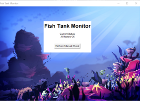
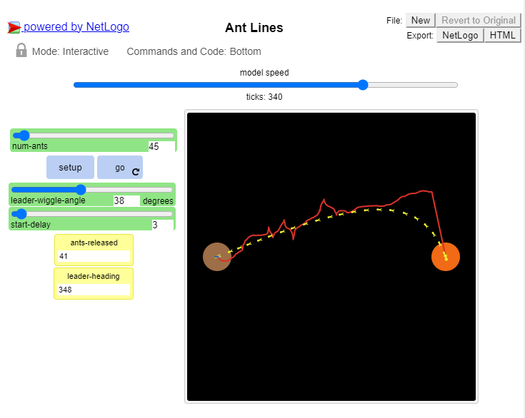
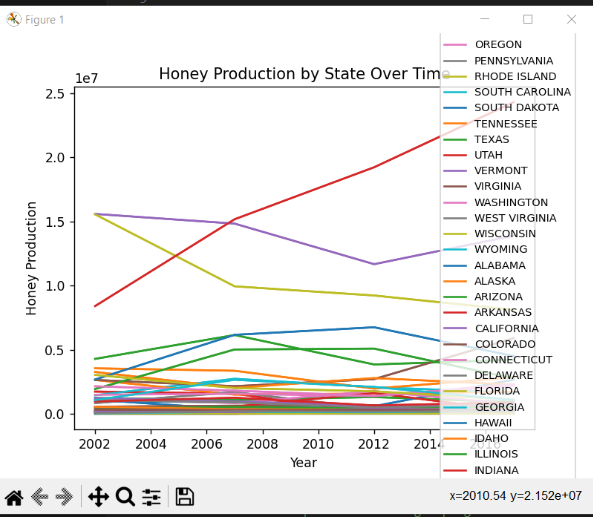

Home
Portfolio
About Me
This is my Portfolio Page!
First Project: Boba Tea Maker

This project is all about making your own boba tea! You can choose your own flavor (strawberry, matcha, or brown sugar) and can even leave a review for us! Depending on your response, we give you a happy, sad, or confused face. We used simple turtle commands on trinket to create this program.
Second Project: Duck Hunting Game

We created ducks that fly in the air in random patterns. The player moves a slingshot that shoots rocks at the ducks in the air. When the duck is hit by a rock, the duck disappears and a new duck is spawned in a different random location. A scoreboard keeps track of how many ducks are hit and there is a timer that keeps track of how much time has passed. When the time has run out, the game ends.
Third Project: Bunny Jump Game
.png)
This game is made from Scratch. The player controls a rabbit in the game. The goal is to jump over as many obstacles as possible. The game ends when the rabbit hits an obstacle. The rabbit's costume and the background change every 10 seconds.
Fourth Project: A pHishy Fish Tank

This was the PLTW 2.1.6 project. We identified all security vulnerabilities that may have resulted in a system breach, used our knowledge to debug and decrypt issues in a fish tank monitoring system, fixed and tested the system, and made recommendations to further improve the software.
Fifth Project: Understanding Complex Systems

This is the PLTW 4.1.4 Project. In this project, we used a real NetLogo model called "Ant Lines" and analyzed it. The model showcases how ants find food sources and how their path to the food source becomes straight as they travel. Initially, the leader ant moves around randomly. As the number of following ants increases and the previous ants find the food source, the pathway to the food source becomes a completely straight line. Although this model is not necessarily completely accurate in how ants create straight lines in their search for food, this is still a good mathematical representation despite certain simplifications in the program.
Sixth Project: Rover Phone Home
This is the PLTW 3.16 Project. In this project, we analyzed data from graphs and tables to come to the conclusion that the rover is located in the tropical islands of the alien planet. The factors that we analyzed were sound, temperature, light, and wind. The tropical islands region has low temperatures that heat up quickly during the daytime and cool off quickly at night, bright, intense light during daytime, low constand howl of wind and waves, and constant winds that vary with regularity. Each of our four graphs illustrated these requirements for this region. This allowed us to conclude that the rover is located in the tropical islands.
Seventh Project: Making Meaning from Data

This is our PLTW’s 3.2.4 Project, “Making Meaning from Data.” In this project, we analyzed data from the web about the production of honey in America, cleaning up areas of concern as we looked at the data. With the use of matplotlib and pandas in python, we were able to create graphs using the data. These graphs showed us the trends of honey production in various states. Because there was a large amount of data, we separated the data into high, mid, and low producers of honey in America by calculating the sums of each states’ honey production. With this information, we were able to come to the conclusion that honey production in America, or rather, bee colonies in America are declining at a steady rate. Knowing this information will allow officials to pay more attention to this critical issue before it becomes out of control and has irreversible effects.